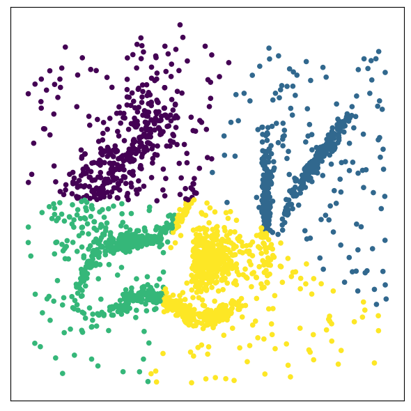

TP Classification
Contents
TP Classification#
from __future__ import division, print_function, unicode_literals
import numpy as np
import matplotlib
import matplotlib.pyplot as plt
# Affichage et sauvegarde des figures
%matplotlib inline
plt.rcParams['axes.labelsize'] = 12
plt.rcParams['xtick.labelsize'] = 12
plt.rcParams['ytick.labelsize'] = 12
import warnings
warnings.filterwarnings("ignore")
Nuage de points à analyser#
data = np.load('./classification.npy')
plt.figure(figsize=(6,6))
plt.scatter(data.T[0], data.T[1], c='b', s = 20, linewidths=0)
frame = plt.gca()
frame.axes.get_xaxis().set_visible(False)
frame.axes.get_yaxis().set_visible(False)
plt.tight_layout()
---------------------------------------------------------------------------
FileNotFoundError Traceback (most recent call last)
Input In [2], in <module>
----> 1 data = np.load('./classification.npy')
2 plt.figure(figsize=(6,6))
3 plt.scatter(data.T[0], data.T[1], c='b', s = 20, linewidths=0)
File /usr/local/lib/python3.9/site-packages/numpy/lib/npyio.py:405, in load(file, mmap_mode, allow_pickle, fix_imports, encoding, max_header_size)
403 own_fid = False
404 else:
--> 405 fid = stack.enter_context(open(os_fspath(file), "rb"))
406 own_fid = True
408 # Code to distinguish from NumPy binary files and pickles.
FileNotFoundError: [Errno 2] No such file or directory: './classification.npy'
Votre travail#
Classer ce nuage de points avec les algorithmes vus en cours :
Pour ces méthodes, vous déterminerez le nombre optimal de classes. Vous experimenterez divers paramètres (initialisation des centres, liens min, max, lien de Ward,…). Vous pourrez évaluer la qualité de la partition en utilisant l’indice de silhouette
Pour afficher le résultat d’une classification, vous pourrez utiliser la fonction suivante
plt.scatter(data.T[0], data.T[1], c=model.labels_,s=20)
plt.tight_layout()

import time
import warnings
import numpy as np
import matplotlib.pyplot as plt
from sklearn import cluster, datasets, mixture
from sklearn.neighbors import kneighbors_graph
from sklearn.preprocessing import StandardScaler
from itertools import cycle, islice
np.random.seed(0)
# ============
# Generate datasets. We choose the size big enough to see the scalability
# of the algorithms, but not too big to avoid too long running times
# ============
n_samples = 500
noisy_circles = datasets.make_circles(n_samples=n_samples, factor=0.5, noise=0.05)
noisy_moons = datasets.make_moons(n_samples=n_samples, noise=0.05)
blobs = datasets.make_blobs(n_samples=n_samples, random_state=8)
no_structure = np.random.rand(n_samples, 2), None
# Anisotropicly distributed data
random_state = 170
X, y = datasets.make_blobs(n_samples=n_samples, random_state=random_state)
transformation = [[0.6, -0.6], [-0.4, 0.8]]
X_aniso = np.dot(X, transformation)
aniso = (X_aniso, y)
# blobs with varied variances
varied = datasets.make_blobs(
n_samples=n_samples, cluster_std=[1.0, 2.5, 0.5], random_state=random_state
)
# ============
# Set up cluster parameters
# ============
plt.figure(figsize=(9 * 2 + 3, 13))
plt.subplots_adjust(
left=0.02, right=0.98, bottom=0.001, top=0.95, wspace=0.05, hspace=0.01
)
plot_num = 1
default_base = {
"quantile": 0.3,
"eps": 0.3,
"damping": 0.9,
"preference": -200,
"n_neighbors": 3,
"n_clusters": 3,
"min_samples": 7,
"xi": 0.05,
"min_cluster_size": 0.1,
}
datasets = [
(
data,
{
"damping": 0.77,
"preference": -240,
"quantile": 0.2,
"n_clusters": 2,
"min_samples": 7,
"xi": 0.08,
},
),
(
data,
{
"damping": 0.75,
"preference": -220,
"n_clusters": 2,
"min_samples": 7,
"xi": 0.1,
},
),
(
data,
{
"eps": 0.18,
"n_neighbors": 2,
"min_samples": 7,
"xi": 0.01,
"min_cluster_size": 0.2,
},
),
(
data,
{
"eps": 0.15,
"n_neighbors": 2,
"min_samples": 7,
"xi": 0.1,
"min_cluster_size": 0.2,
},
),
(data, {"min_samples": 7, "xi": 0.1, "min_cluster_size": 0.2}),
(no_structure, {}),
]
for i_dataset, (dataset, algo_params) in enumerate(datasets):
# update parameters with dataset-specific values
params = default_base.copy()
params.update(algo_params)
X, y = dataset.T
print(X.shape)
# normalize dataset for easier parameter selection
X = StandardScaler().fit_transform(X)
# estimate bandwidth for mean shift
bandwidth = cluster.estimate_bandwidth(X, quantile=params["quantile"])
# connectivity matrix for structured Ward
connectivity = kneighbors_graph(
X, n_neighbors=params["n_neighbors"], include_self=False
)
# make connectivity symmetric
connectivity = 0.5 * (connectivity + connectivity.T)
# ============
# Create cluster objects
# ============
ms = cluster.MeanShift(bandwidth=bandwidth, bin_seeding=True)
two_means = cluster.MiniBatchKMeans(n_clusters=params["n_clusters"])
ward = cluster.AgglomerativeClustering(
n_clusters=params["n_clusters"], linkage="ward", connectivity=connectivity
)
spectral = cluster.SpectralClustering(
n_clusters=params["n_clusters"],
eigen_solver="arpack",
affinity="nearest_neighbors",
)
dbscan = cluster.DBSCAN(eps=params["eps"])
optics = cluster.OPTICS(
min_samples=params["min_samples"],
xi=params["xi"],
min_cluster_size=params["min_cluster_size"],
)
affinity_propagation = cluster.AffinityPropagation(
damping=params["damping"], preference=params["preference"], random_state=0
)
average_linkage = cluster.AgglomerativeClustering(
linkage="average",
affinity="cityblock",
n_clusters=params["n_clusters"],
connectivity=connectivity,
)
birch = cluster.Birch(n_clusters=params["n_clusters"])
gmm = mixture.GaussianMixture(
n_components=params["n_clusters"], covariance_type="full"
)
clustering_algorithms = (
("MiniBatch\nKMeans", two_means),
("Affinity\nPropagation", affinity_propagation),
("MeanShift", ms),
("Spectral\nClustering", spectral),
("Ward", ward),
("Agglomerative\nClustering", average_linkage),
("DBSCAN", dbscan),
("OPTICS", optics),
("BIRCH", birch),
("Gaussian\nMixture", gmm),
)
for name, algorithm in clustering_algorithms:
t0 = time.time()
# catch warnings related to kneighbors_graph
with warnings.catch_warnings():
warnings.filterwarnings(
"ignore",
message="the number of connected components of the "
+ "connectivity matrix is [0-9]{1,2}"
+ " > 1. Completing it to avoid stopping the tree early.",
category=UserWarning,
)
warnings.filterwarnings(
"ignore",
message="Graph is not fully connected, spectral embedding"
+ " may not work as expected.",
category=UserWarning,
)
algorithm.fit(X)
t1 = time.time()
if hasattr(algorithm, "labels_"):
y_pred = algorithm.labels_.astype(int)
else:
y_pred = algorithm.predict(X)
plt.subplot(len(datasets), len(clustering_algorithms), plot_num)
if i_dataset == 0:
plt.title(name, size=18)
colors = np.array(
list(
islice(
cycle(
[
"#377eb8",
"#ff7f00",
"#4daf4a",
"#f781bf",
"#a65628",
"#984ea3",
"#999999",
"#e41a1c",
"#dede00",
]
),
int(max(y_pred) + 1),
)
)
)
# add black color for outliers (if any)
colors = np.append(colors, ["#000000"])
plt.scatter(X[:, 0], X[:, 1], s=10, color=colors[y_pred])
plt.xlim(-2.5, 2.5)
plt.ylim(-2.5, 2.5)
plt.xticks(())
plt.yticks(())
plt.text(
0.99,
0.01,
("%.2fs" % (t1 - t0)).lstrip("0"),
transform=plt.gca().transAxes,
size=15,
horizontalalignment="right",
)
plot_num += 1
plt.show()
(2309,)
---------------------------------------------------------------------------
ValueError Traceback (most recent call last)
Input In [15], in <module>
111 print(X.shape)
113 # normalize dataset for easier parameter selection
--> 114 X = StandardScaler().fit_transform(X)
116 # estimate bandwidth for mean shift
117 bandwidth = cluster.estimate_bandwidth(X, quantile=params["quantile"])
File /usr/local/lib/python3.9/site-packages/sklearn/base.py:852, in TransformerMixin.fit_transform(self, X, y, **fit_params)
848 # non-optimized default implementation; override when a better
849 # method is possible for a given clustering algorithm
850 if y is None:
851 # fit method of arity 1 (unsupervised transformation)
--> 852 return self.fit(X, **fit_params).transform(X)
853 else:
854 # fit method of arity 2 (supervised transformation)
855 return self.fit(X, y, **fit_params).transform(X)
File /usr/local/lib/python3.9/site-packages/sklearn/preprocessing/_data.py:806, in StandardScaler.fit(self, X, y, sample_weight)
804 # Reset internal state before fitting
805 self._reset()
--> 806 return self.partial_fit(X, y, sample_weight)
File /usr/local/lib/python3.9/site-packages/sklearn/preprocessing/_data.py:841, in StandardScaler.partial_fit(self, X, y, sample_weight)
809 """Online computation of mean and std on X for later scaling.
810
811 All of X is processed as a single batch. This is intended for cases
(...)
838 Fitted scaler.
839 """
840 first_call = not hasattr(self, "n_samples_seen_")
--> 841 X = self._validate_data(
842 X,
843 accept_sparse=("csr", "csc"),
844 estimator=self,
845 dtype=FLOAT_DTYPES,
846 force_all_finite="allow-nan",
847 reset=first_call,
848 )
849 n_features = X.shape[1]
851 if sample_weight is not None:
File /usr/local/lib/python3.9/site-packages/sklearn/base.py:566, in BaseEstimator._validate_data(self, X, y, reset, validate_separately, **check_params)
564 raise ValueError("Validation should be done on X, y or both.")
565 elif not no_val_X and no_val_y:
--> 566 X = check_array(X, **check_params)
567 out = X
568 elif no_val_X and not no_val_y:
File /usr/local/lib/python3.9/site-packages/sklearn/utils/validation.py:769, in check_array(array, accept_sparse, accept_large_sparse, dtype, order, copy, force_all_finite, ensure_2d, allow_nd, ensure_min_samples, ensure_min_features, estimator)
767 # If input is 1D raise error
768 if array.ndim == 1:
--> 769 raise ValueError(
770 "Expected 2D array, got 1D array instead:\narray={}.\n"
771 "Reshape your data either using array.reshape(-1, 1) if "
772 "your data has a single feature or array.reshape(1, -1) "
773 "if it contains a single sample.".format(array)
774 )
776 # make sure we actually converted to numeric:
777 if dtype_numeric and array.dtype.kind in "OUSV":
ValueError: Expected 2D array, got 1D array instead:
array=[-0.12153499 -0.22093687 0.1259037 ... 0.50243143 0.53822256
-0.08688887].
Reshape your data either using array.reshape(-1, 1) if your data has a single feature or array.reshape(1, -1) if it contains a single sample.
<Figure size 2100x1300 with 0 Axes>